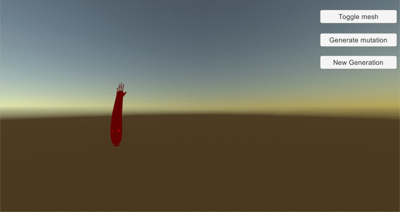
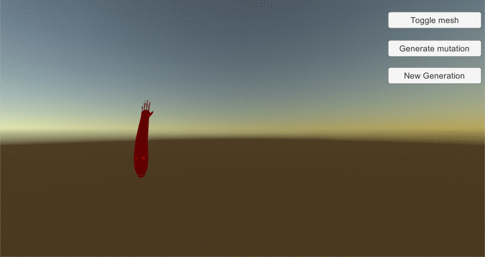
 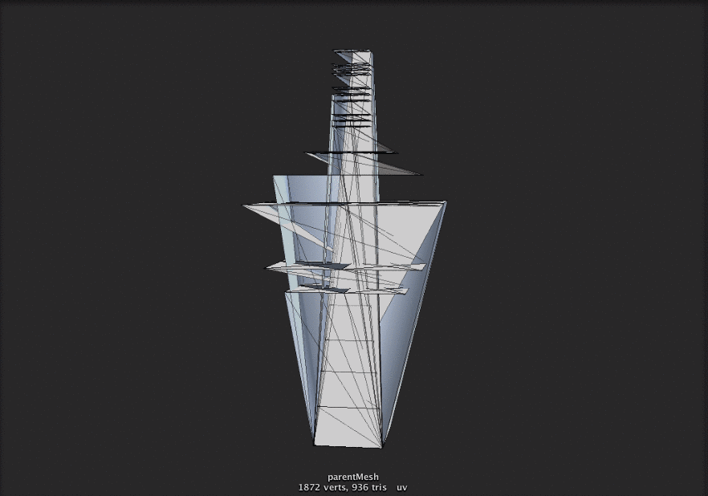
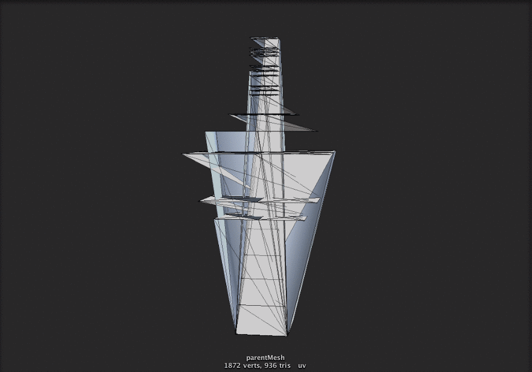
TerraForm
Procedural Generation of Earth-like Ecosystems
Procedural generation is a growing topic within the gaming community, with recent games such as Spore or No Man’s Sky which allow for almost infinite in-game universe exploration of automatically generated unique planets, flora and fauna. Not only can procedural generation provide a form of entertainment, but it can also have incredible benefits if used in conjunction with the human mind and craft, in order to design digital environments, creatures or objects. There is great potential for this yet young wing of game programming, and our project aims to understand and implement the basics of using procedural techniques in order to explore different levels of digital world creation.
The goal of this project is building a planetary simulator able to produce varied types of terrain, trees and creatures from (almost) scratch—through using the least possible amount of pre-existing assets. We are well aware of the fact that even the most iconic games using procedural generation still use a wide range of 3D designed prefabs, and therefore we do not advocate for using none. As in most situations, a hybridized approach, a productive human-computer interaction in designing and building the simulation world is probably the most fruitful path.
The project has two almost disjoint aspects: the game world and the flora, tackled by Spencer Villars’s CPSC 490 project, and the fauna, tackled by Cezar Mocan’s project. This report focuses on the latter, investigating the challenges and lessons learned in creating procedural 3D animals from zero and placing them in the simulator provided by the other half of the project.


 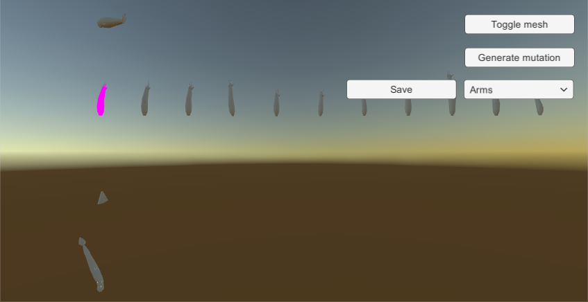
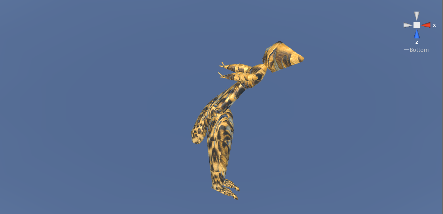
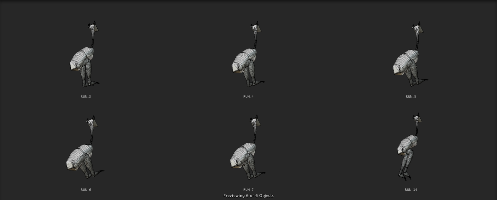
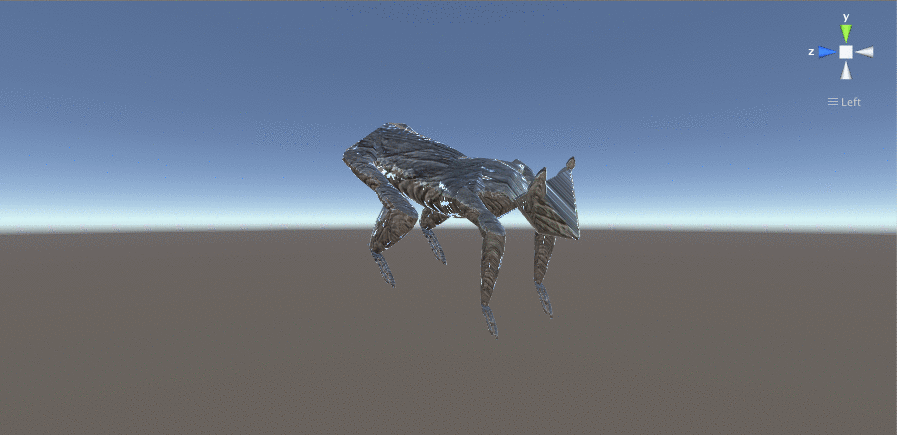
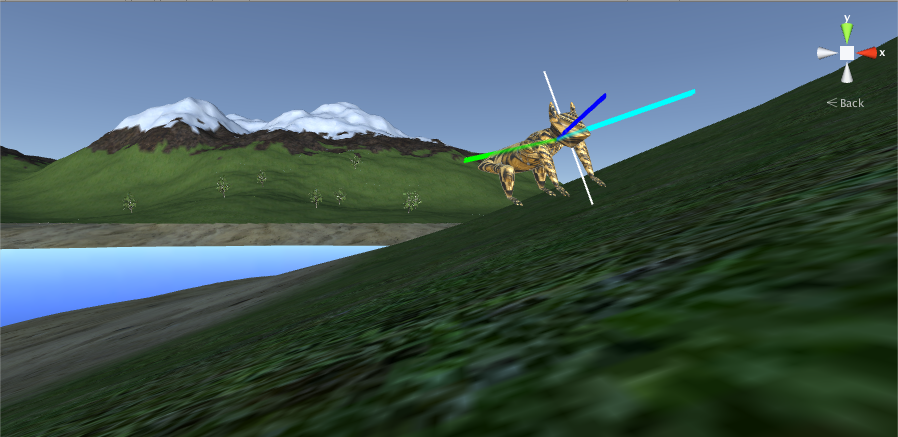
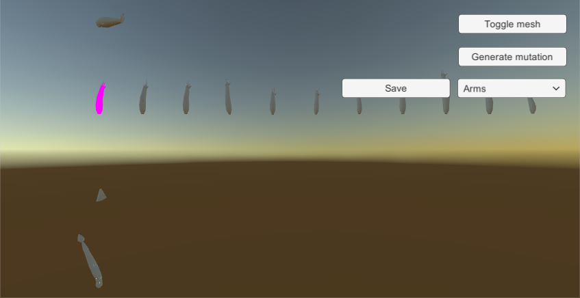
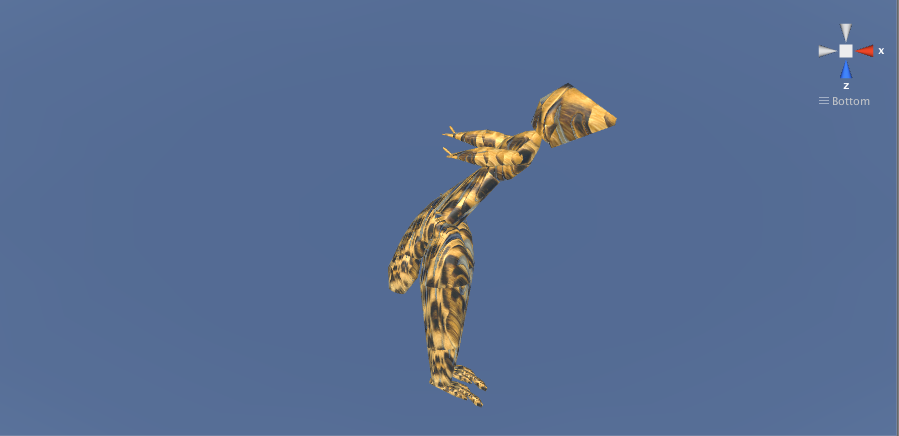
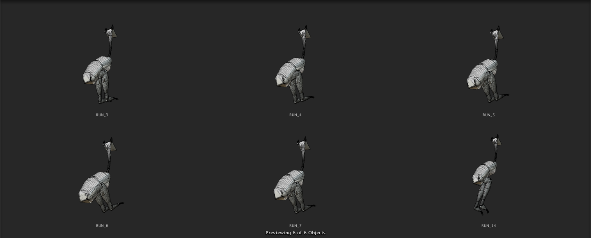
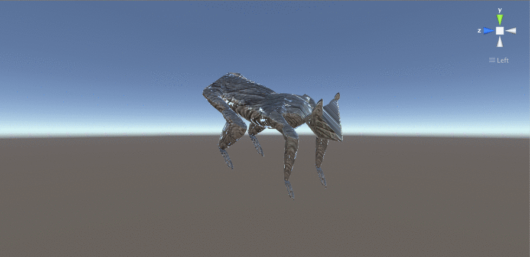
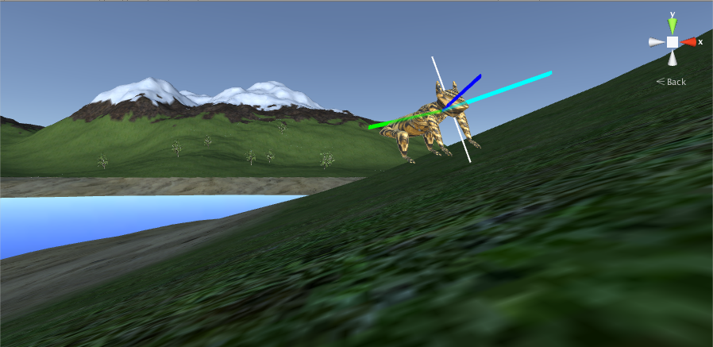